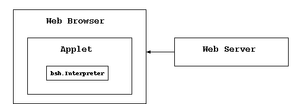

The BeanShell Demo Applet

The BeanShell Applet is primarily for demonstration and educational purposes.
It allows you to experiment with BeanShell live, directly in your web
browser.
You can try the applet live at the following locations:
Swing JConsole Applet
A Swing enabled JConsole usable with the Java plug-in
(or other swing capable browser:
BeanShell Demo with Swing Console
(http://www.beanshell.org/jbshdemo.html)
AWT Console Applet
A minimal (not very good) AWT based console that should work in any browser.
BeanShell Demo with simple AWT Console
(http://www.beanshell.org/awtbshdemo.html)
Signed JConsole Applet
There are many additional security restrictions on Applets and this limits
what you can do with BeanShell in this mode. For unrestricted access
try the signed version of the applet here. It requires the Java 1.4 plug-in
to function.
A Swing enabled JConsole as a signed applet with the Java plug-in
(or other swing capable browser). The signed
applet will allow you unrestricted access to your environment through
scripting.
BeanShell Demo with Swing Console - Signed Applet
(http://www.beanshell.org/signedjbshdemo.html)